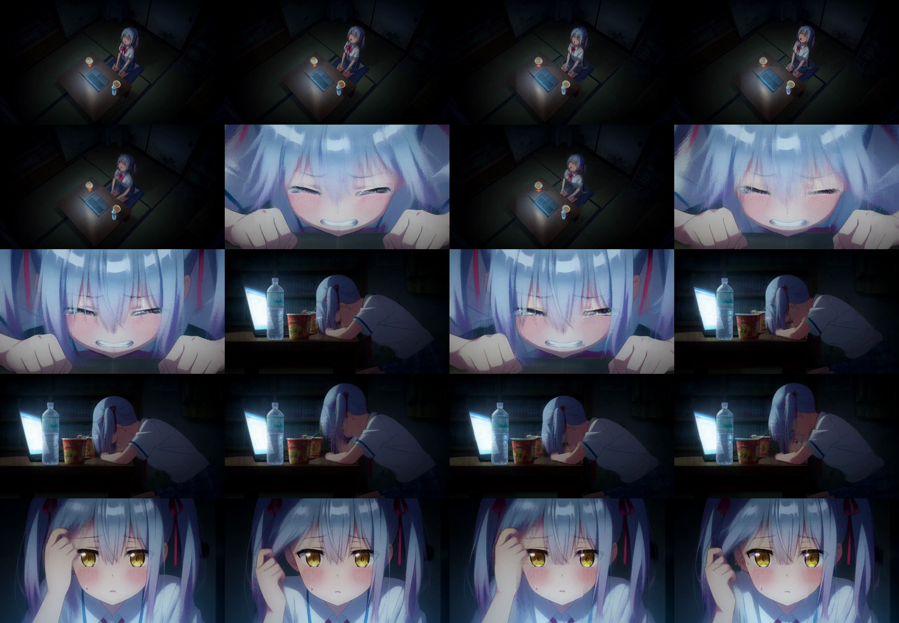
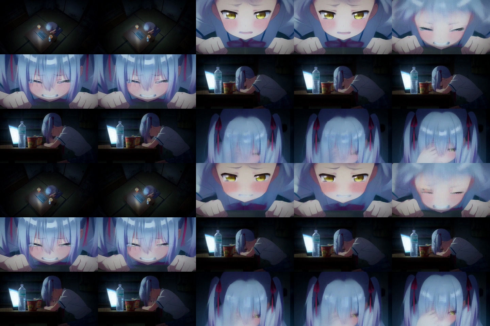

Ghosting gate: pass on the pinned 480p prompt. Exact parity and multi-prompt gate: open. Exact attention remains the default.
| Field | Value |
|---|---|
| Prompt | 942-byte Chinese four-shot prompt; 240 tokens |
| Geometry | 864×480, 124 frames, 24 fps |
| Sampler | Turbo v4-step600 EMA, four evaluations, seed 42 |
| Packed sequence | 15,639 rows; 654 text/audio conditioning rows |
| Runtime | C graph/runtime, Objective-C Metal bridge, precompiled Metal kernels; no Python inference framework |
| Candidate switch | MINIMAX_H3_TREE_ATTENTION=quality |
| Approximate calls | Step mask 0x8; layer mask 0x3ff0000000000; 10 of 200 H3 attention calls |
| Change | Stage | Reason | Measured result |
|---|---|---|---|
| Conditioning route correction | Joint attention | Text/audio queries previously inherited video route 0; they now attend all video rows exactly. | Semantic bug removed. |
| BF16/FP32 restoration | Tree attention | Remove unintended BF16→FP16 conversion and FP16 probability/PV accumulation. | Matches exact path precision contract. |
| Per-frame leaf summaries | Video K/V | Never average values across frames; exact-expand the same spatial neighborhood in every latent frame. | Old temporal double-exposure mechanism removed. |
| Turbo-step scan | Denoise schedule | Few-step H3 cannot inherit a uniform sparse schedule from long diffusion runs. | Step 4 was least sensitive; steps 1–3 remain exact. |
| Ten-layer scan | H3 layers | Measured sensitivity decreases toward the block suffix. | Layers 40–49 selected; layers 0–39 remain exact. |
| Metric | Earlier exact | Frame-safe | Finding |
|---|---|---|---|
| Last-step layers 40–49, adjacent same-run groups | 92.597490 s | 70.313368 s | 22.284122 s less; 1.316926× |
| H3 denoise | 1,898.120497 s | 1,831.966125 s | Earlier-run comparison includes run-to-run variation. |
| Video VAE | 487.273811 s | 481.876037 s | Unchanged algorithm. |
| Full N-to-N | 2,418.708237 s | 2,344.734228 s | 73.974009 s less; 1.031549×. |
| Peak physical footprint | 4,440,725,568 B | 4,921,907,392 B | +481,181,824 B; tree buffers remain a cost. |
| Metric | Exact | Frame-safe | Rejected tree |
|---|---|---|---|
| Scene changes, threshold 0.25 | 3 | 3, same timestamps | 10 |
| Adjacent-frame mean luma difference | 4.495795 | 4.283097 | 9.814484 |
| Mean frame luma range | 206.258065 | 215.596774 | 212.250000 |
| Blur mean | 5.686310 | 5.768716 | 5.749247 |
| PSNR / SSIM versus exact | reference | 32.384649 dB / 0.932134 | 13.456034 dB / 0.659932 |
The candidate preserves all three exact cut times: 1.541667, 2.583333 and 3.916667 seconds. Uniform and boundary samples show the same four shots, composition and subject identity, without the rejected route's double exposure. The candidate is not numerically lossless.
Exact is left; frame-safe is right.

Exact is above; frame-safe is below. Each row contains five frames around a detected cut.

Expand the safe fraction with offline per-layer/head/step teacher profiles, online content-aware selection, and first-order correction for unselected blocks. Relevant primary sources: PISA, CalibAtt, SVOO, DFSAttn, and Sol-Attn.